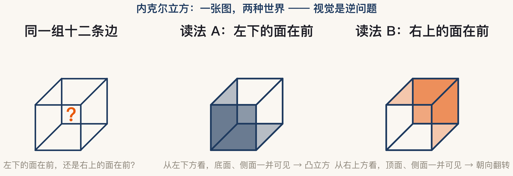

正课 · 01 · 第 1 章 绪论
什么是计算机视觉？
以及，它为什么这么难
开场之问 · ONE LOOK
一张照片，你一眼就看懂了
这一集回答两个问题：计算机视觉到底在干什么？它为什么比你想的难得多？
人类 · HUMANS
“
我们毫不费力地感知着身边世界的三维结构。
花瓶里的花：花瓣的形状与半透明、光影的细微模式、与背景的分离 —— 原书 §1.1 开篇（第 3 页）
机器眼里 · PIXELS
同一张照片，
机器只看到数字
没有「花」，没有「桌子」，只有 0 到 255 的亮度值。「看懂」这件事，要从数字里凭空重建出来。
落差 · THE GAP
一边毫不费力，一边错误百出
人与动物
看懂世界，毫不费力如此自然，以至我们意识不到这是个难题
计算机
算法错误百出「effortlessly」对照「error prone」——原书原话（第 5 页）
原书提醒：没入过行的人，常常低估这个问题的难度。
定义 · INVERSE PROBLEM
视觉是一场逆问题
原书定义（第 5 页）：从一张或多张图像出发，描述所见的世界，并重建它的性质——形状、光照、颜色分布。
为什么难 · ONE IMAGE, MANY WORLDS
一张图，多种立体解读
这个线框立方体，是左下的面朝向你，还是右上的面朝向你？——两个答案都说得通。
成像把三维压成二维，单张图像不足以唯一确定三维世界。逆问题之所以难，是因为它的解往往不止一个。
出路 · PRIORS
没有唯一解，就要加约束
统计
从数据里学大量训练数据 → 概率模型（原书第 10 页）
全书后面讲的所有技术，本质都是这三件事的不同组合。
证据 · ILLUSIONS
错觉证明：视觉是猜出来的
缪勒-莱尔
等长的线看起来不等长大脑在自动套用透视规则
棋盘阴影
暗块与亮块其实一样亮视觉在自动「减去」光照
赫尔曼网格
交叉点上幽灵般的灰点视网膜与脑的并行通路在「作画」
视知觉心理学家研究了几十年（原书 Figure 1.3 · 第 4 页）——连人眼的「算法」都还没被完全破解。
历史 · EARLY AI
“
让人引以为难的，是让计算机明白：「视觉」其实比下棋更难。
早期 AI 曾相信：逻辑与规划才是智能的硬骨头，知觉是简单活儿 —— 事实正相反（原书第 5 页 · Boden 2006）
方法论 · HOW TO WIN
难，但有章法
原书立场（第 10 页）：视觉大量是逆问题与未知量估计，所以全书重度强调算法——对噪声与模型偏差足够鲁棒、运行起来足够高效。
统计与贝叶斯方法负责「稳」：用概率表达多个可能答案，并量化不确定性。原书例子：机器人估距，宁可低估也别高估——撞上去的代价不对称。
下一集 · APPLICATIONS
这些算法，已经在你身边
人脸
检测 · 解锁 · 认证原书第 8 页 · §6.3.1
下一集（E010）把工业到消费级的应用讲透——它们也是全书的组织线索。
动手 · CODE
实验：亲手画内克尔立方
全部用 Matplotlib 手绘，不查任何 3D 库——让你亲眼看见「歧义」本身。
实验结果 · OUTPUT
同一组线条，两个世界

左：歧义线框 ｜ 中：读法 A（左下的面在前）｜ 右：读法 B（右上的面在前）—— 本集代码实跑输出
收个尾 · RECAP
带走三句话
- 计算机视觉 = 从图像反推世界：形状、光照、颜色分布（逆问题）
- 它难，是因为成像丢信息——一张图对应多种世界
- 出路是先验 + 约束 + 统计，绝大多数技术都能从这三个角度理解
NEXT · 回书指路
读原书§1.1 开篇（原书第 3–5 页），留意「逆问题」那段原话
作业对着本集的立方体图盯三十秒，看「前后翻转」会不会自己发生
下一集E010 应用全景：从 OCR 到自动驾驶，视觉都在挣钱